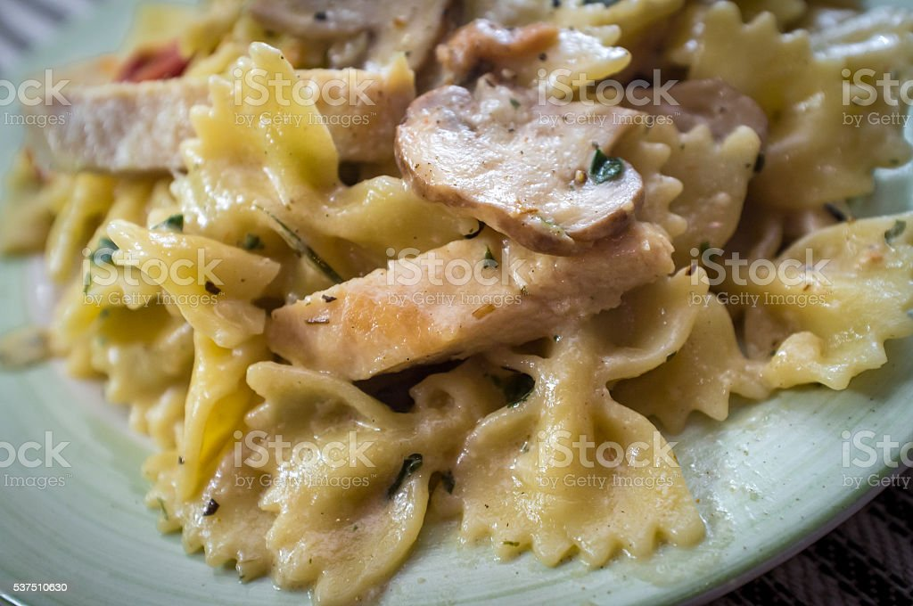

Chicken Alfredo

Description
A yummy Italian dish is Chicken Alfredo. It is my one of my favorite foods, and it can be eaten anytime. This Chicken Alfredo recipe has three major ingredients, which are chicken breast, bowtie pasta, and Alfredo Sauce. Other ingredients include various seasonings. I invite you to challenge your talent and tastebuds by trying it out!
Preparation and Cooking Time:
Step-by-Step Directions:
Chicken

- Rinse boneless chicken breasts with water and 1/2 cup vinegar.
- Dice up the chicken into small portions.
- Season the diced chicken with 1/2 teaspoon Tumeric, 3/4 teaspoon Garlic Powder, 1/4 teaspoon Black Pepper, 1/4 teaspoon Sea Salt, 1/4 teaspoon Paprika, and 1/4 teaspoon Curry Powder.
- Pour 2 tablespoons Olive Oil into a pan and heat it up.
- Cook the seasoned and diced chicken breast in the Olive Oil for about 20 minutes. Do not overcook.
- Dice up 1 Yellow Onion, 1 Portabella Mushroom, and 2 Roma tomatoes.
- Add the diced onion, mushroom, and tomatoes to the chicken. Cook for about 15 minutes.
Bowtie Pasta

- Boil water in a pot.
- Add in the Bowtie Pasta. Put 1/2 teaspoon Olive Oil into the pot with the pasta
- Cook until al dente. Drain.
Alfredo Sauce(Ragu Brand)

- Open the 5 jars of Alfredo Sauce. Pour into a large pot.
- Add in the cooked chicken breasts and vegetables. Stir and bring to a boil.
The Chicken Alfredo is ready to be served. This recipe can feed 10 persons.

- Place desired pasta amount on a plate. Add chicken breast with vegetables and pasta sauce.
- Enjoy!
The nutritional facts provided are based on the ingredients that I used in this recipe.
Nutrition per one Serving
- Calories 285
- Carbohydrates 22g
- Protein 4g
- Fat 9g
- Saturated Fat 3g
- Trans Fat 0g
- Cholesterol 10mg
- Sodium 81mg
- Potassium 132mg
- Fiber 1g
- Sugar 0.77g
- Vitamin A 3.0IU
- Vitamin C 1.1mg
- Calcium 337mg
- Iron 9mg
- Potassium 402mg
Notes & FAQ
- al dente: Cooked so as to be still firm when bitten
- Cuisine: Italian
- Keyword: Chicken Alfredo recipe
- Is Chicken Alfredo considered a main course?
- What are side dishes that go along with Chicken Alfredo?
- Can the chicken be substituted for something else?
- Yes, shrimp can be used instead of chicken.
- Where can I buy the main ingredients for this recipe?